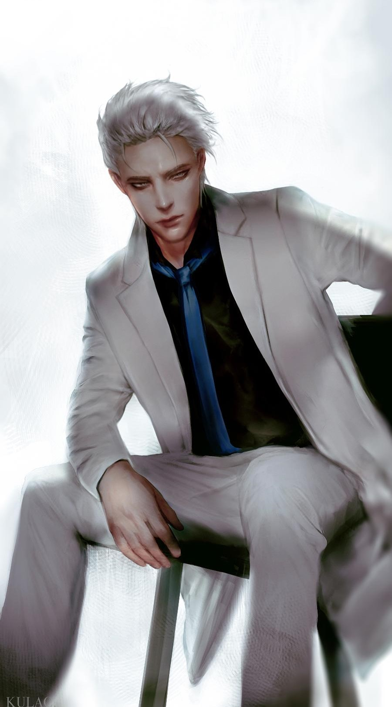
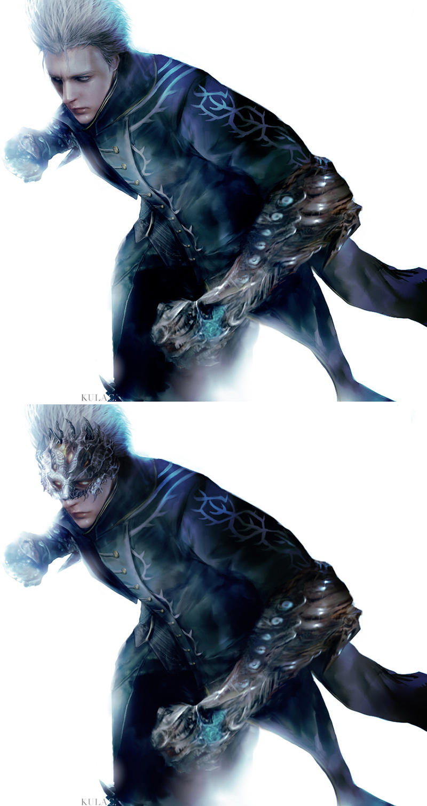

Vergil
Vergil is the older twin brother of Dante and one of the main antagonists of the Devil May Cry franchise. Following the death of their mother as children, Vergil and Dante went their separate ways, with Vergil rejecting his humanity and embracing his demonic heritage, in contrast with his younger brother's embrace of humanity and initial rejection of the demonic. Stoic and reserved, Vergil displays a willingness to do anything in his quest to obtain the power of his father, Sparda.
About the Legend

Appearance
In terms of physical appearance, Vergil has fair, yet pale skin, and white, swept back hair, which puts emphasis on the fierce, yet stoic expression on his face; however, when his hair is brushed down or becomes wet, his appearance is physically indistinguishable from his younger twin brother, Dante. Just like his brother, he also has the same, blue eyes.
In terms of apparel, Vergil commonly wears a long, silver buttoned blue coat with three separated coattails. A white, serpentine pattern runs around the collar, with a snakes head hanging over the coat's left shoulder, and its tail slinking down the right, all the way to the bottom of the coat. A gold lining runs across the edges of the coat, and a silky, golden flower blossom pattern decorates the inner lining. Each cuff of the coat also possesses five, gold buttoned straps with gold lining; in Devil May Cry 4: Special Edition, the coat also features identical straps on each shoulder, decorated with silver buttons instead of gold. Before facing the demons, Vergil wore a long brown hooded cloak where he conceals his main outfit.
Underneath the coat, Vergil wears a navy blue ascot wrapped around his neck, which hangs over a black, sleeveless vest that reveals his well-toned arms and shoulders. He wears tan, fingerless gloves, a brown, snakeskin belt with a silver buckle, dark green pants with a scale pattern running across its surface, and tall, brown boots with two golden buckled straps at the top.
During certain in-game cutscenes in Devil May Cry 3, Vergil's golden half of the Perfect Amulet can be seen around his neck, yet it is not a permanent part of his character model.
As Corrupt Vergil, Vergil's appearance becomes much more sinister; his skin takes on a sickly, almost grey pallor with blue, pulsating veins running across his face. His eyes become a deep red, with black pupils. In addition, he now wears his father's clothing instead of his own, with his half of the Perfect Amulet replacing Dante's half as its brooch. In Devil May Cry 4, his outfit is slightly modified to his coat split into three coattails similar to his old outfit.
While serving as Nelo Angelo's base, Vergil has completely white skin tone, with blue veins and red, pupil-less eyes.
In Devil May Cry 5, Vergil looks nearly identical to his younger self from the third game, but is older in appearance due to the passage of time. His coat is now black with light neon blue serpentine patterns and three separated coattails with slightly tattered edges. Vergil is no longer wearing an ascot tie as he was seen wearing a black sleeveless zippered-turtleneck beneath his midnight blue formal vest. He also wears charcoal gray fingerless gloves, black pants and dark boots covered by teal gaiters.
When he initially appears in his weakened state and severs Nero's Devil Bringer to regain Yamato in order to separate his human and demon halves, creating V and Urizen in the process, Vergil wore a tattered long black hooded cloak to cover his outfit, and half of his face was shown to be pale white with blue veins, retaining these features even after his defeat from Dante as Nelo Angelo and being freed from Mundus' corruption, however when V and Urizen reunite to bring Vergil back his skin returns to normal.

Personality
In contrast to his twin brother Dante's boisterous, outgoing, and extroverted personality, Vergil is calm, cool, collected, and introverted, constantly maintaining an aura of fearlessness. Vergil cares little for the well-being of those around him, and is unflinching in his pursuit of power; however, in spite of his cold and ruthless demeanor, he is an honorable warrior who maintains his own set of morals and disciplines. Vergil despises fighting dirty and refuses to use firearms, deeming them to be unworthy of a "true warrior", though he will still use ranged attacks if they can be made to originate from a melee weapon. His code of honor still surfaces while he is corrupted as Nelo Angelo: he refuses to attack Dante from behind and waits until both are outside to begin their first fight. In Devil May Cry 5, after he was restored and then attacked by Dante, he noted that his brother was weak and wounded from his fight with Urizen. As such, despite having been able to easily kill Dante, Vergil allowed him to rest and recover, stating that defeating Dante while weakened had no meaning. He also has a tendency to speak in a very formal and somewhat antiquated manner, possibly as a consequence of reading a great deal of classic literature in his younger years. It should be noted however that his "code" is more based upon proving his dominance than any sort of underlying morality. As such he is perfectly willing to utilize methods or tactics that may be dishonorable for the sake of becoming stronger, or in situations where he simply has no other choice. For instance, when he tore off Nero's devil bringer arm to retrieve Yamato, he essentially ambushed Nero while his back was turned. However, as he was dying at the time, he likely lacked the time or energy to engage in a full-on battle with an opponent of Nero's caliber.
Unlike Dante, Vergil is willing to embrace his demonic heritage, and seeks to emulate his father's power and cold persona. While Dante seeks to protect humanity from the demons, the only thing which Vergil seeks in life is even greater demonic power. His desire for power is an almost character defining obsession for him, and almost certainly stems from having not only lost his family as a child, but from being on his own from the day of his family's destruction on. Despite his normal personality of cold dismissal, he does cherish certain things - the Devil-blade Yamato, a dark katana left to him as a keepsake by his father, his own half of the Perfect Amulet, a keepsake from his mother and, after his own realization, his own son Nero. In Devil May Cry 3, Vergil seems to reveal some of his feelings by claiming to Dante: "Might controls everything, and without strength you cannot protect anything, let alone yourself.". This may be a reference to their mother's death. It may also imply that Vergil seeks power as compensation for failing to protect her. His failure may also have made him forsake close human relationships, due to his perceived fragility of humanity. He appeared also to link the acquisition of power to loss or sacrifice, complaining as Urizen to Dante during their final battle that Dante should not be as powerful as he is due to having "never lost anything."
V is the human side of Vergil, and he is able to see his past without the coldness and uncaring eyes of Vergil himself. This is his human manifestation that he has kept suppressed all his life to attain his goals of power. V describes Vergil as "One who lost everything", and that the defeats he suffered only caused him to sink lower. Ashamed of his actions, V realized the gravity of crimes he committed and how important the things he threw away in the endless pursuit of power really were, such as his humanity and younger brother. V explained to Nero that "he", meaning Vergil, only wanted to be protected and loved, but since he was alone his only option was to survive.
V mentioned that he originally went to Dante in the hope that he could right the wrong that Vergil created with the birth of Urizen and all the past horrors he had caused during his lifetime. The legitimacy of V's actions and words comes into question when he reveals in his final moments that he had manipulated Dante and Nero in order to remerge with Urizen, due to his fear of dying and being without power. However, either intentionally or not, he also achieved what he mentioned: stopping Urizen's invasion and making Vergil a better person. After Urizen's reintegration with V, Vergil was seen to question his choices as he stood atop the Qliphoth, wondering aloud if his fate might have been different if he had experienced Dante's life. He was also willing to leave his book of poems to Nero, and implied that he would be back for it at some point. His interactions with Dante in Hell after destroying the Qliphoth were also significantly less antagonistic than ever previously seen, with the two of them working in tandem to kill a demon horde and sparring rather than genuinely trying to kill each other.
Vergil is very strong-willed, capable of fighting off Mundus' control for a time and upon seeing Dante's Amulet, causes Nelo Angelo mental anguish.
For more information, check out Vergil on Fandom. Developed by @ Melecio E. Paes III